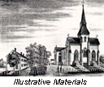
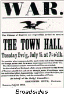
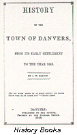
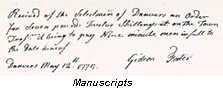
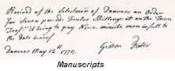

|
The Danvers Archival Center is a department of
the Peabody Institute Library of Danvers, Massachusetts. The
Peabody Institute Library is the town's public library, established
in the mid-nineteenth century through the philanthropy of George
Peabody. Conceived in 1970 as part of the Danvers Historical
Commission Master Plan, the purpose of the Archival Center is to
collect and place in one central location, protected from fire,
atmospheric, and insect damage, all the written and printed
materials relating to the history of Danvers and Salem Village,
Massachusetts.
 The
significance of the Archival Center rests with the fact that it was
the first of its kind to bring together such a large collection of
public and private records of a single community for purposes of
preservation and accessibility to researchers. The archives houses
probably the most extensive and varied collection of materials
relating to an individual municipality in New England. The
collections on permanent deposit include the local history holdings
of the Danvers Historical Society, the library, numerous churches
and town organizations, and official records of the Town of
Danvers.
 The
Archival Center collects through gifts, purchase, and in cases
where the material belongs to still-functioning corporate
organizations, permanent deposit materials on paper relating to the
history and development of Salem Village and Danvers,
Massachusetts. Items collected include books, pamphlets,
monographs, manuscripts, periodicals, maps, photographs,
newspapers, audio and video tapes, films, broadsides, microforms,
and architectural drawings. The
Archival Center collects through gifts, purchase, and in cases
where the material belongs to still-functioning corporate
organizations, permanent deposit materials on paper relating to the
history and development of Salem Village and Danvers,
Massachusetts. Items collected include books, pamphlets,
monographs, manuscripts, periodicals, maps, photographs,
newspapers, audio and video tapes, films, broadsides, microforms,
and architectural drawings.
[Map dated 1872]
Collections include the following:
  1. PRINTED MATERIALS ON LOCAL HISTORY.
Included in this segment of the collections is printed material
relating to the Town of Danvers, from general histories of Essex
County and Danvers to volumes devoted to specialized topics such as
the Danvers Historical Society Collections from 1913. There
are complete runs of the Statements of Accounts of Danvers
from 1845, Valuations of Danvers from 1856, Danvers
School Reports from 1839, Street Poll Lists from 1890,
and numerous biographies of Danvers notables, including Israel
Putnam, John Greenleaf Whittier, Samuel Parris, John Endecott,
Samuel Holten, George Peabody, and Grenville Dodge. Augmenting the
printed collection are general reference sets important to local
study, including Acts and Resolves of the Province of Mass.
Bay; Journals of the House of Representatives of
Massachusetts; Essex County Quarterly Court Records and
Files, 1636-1686; and the Essex Institute Historical
Collections from 1859.
 2.
GENEALOGY. While the Archival Center does not attempt to gather an
all encompassing collection of family histories, it does endeavor
to acquire genealogies of important Danvers families, including the
Putnam and Porter families. Reference volumes for genealogy include
vital records to 1850 of most Massachusetts towns and of
Massachusetts soldiers and sailors in the Revolution, War of 1812,
and Civil War, The Essex Antiquarian, and many volumes of
the New England Historical and Genealogical Register. Also
of aid to the genealogical researcher are the town manuscript vital
records dating up to about 1917 and federal census records for
Danvers from 1790 to 1910. 2.
GENEALOGY. While the Archival Center does not attempt to gather an
all encompassing collection of family histories, it does endeavor
to acquire genealogies of important Danvers families, including the
Putnam and Porter families. Reference volumes for genealogy include
vital records to 1850 of most Massachusetts towns and of
Massachusetts soldiers and sailors in the Revolution, War of 1812,
and Civil War, The Essex Antiquarian, and many volumes of
the New England Historical and Genealogical Register. Also
of aid to the genealogical researcher are the town manuscript vital
records dating up to about 1917 and federal census records for
Danvers from 1790 to 1910.
 3.
WITCHCRAFT. The Ellerton J. Brehaut Witchcraft Collection is
perhaps the most complete collection of printed materials relating
to the 1692 witchcraft hysteria in Salem Village (present day
Danvers). Included in this collection are well over 1,000 items.
The collection includes originals or copies of all the early
imprints relating to Salem Village witchcraft, as well as a number
of seventeenth-century English volumes on the subject. Early
volumes include C. Mather's 1693 Wonders of the Invisible
World, Calef's 1700 More Wonders, Hale's 1702 Modest
Inquiry, Lawson's Brief and True Narrative, I. Mather's
Cases of Conscience, Upham's 1834 Lectures and 1867
Salem Witchcraft, Woodward's 1864 Records, and many
of the books that were owned and used by witchcraft scholars.
Documents include the only signature mark of Giles Cory, and within
the collection is the three-volume typescript copy set Salem
Witchcraft, containing the verbatim transcription of the
witchcraft papers constituting the most complete source in
existence of the hysteria. Also augmenting the collection are the
manuscript records of the First Church of Danvers, Congregational
dating from 1689. 3.
WITCHCRAFT. The Ellerton J. Brehaut Witchcraft Collection is
perhaps the most complete collection of printed materials relating
to the 1692 witchcraft hysteria in Salem Village (present day
Danvers). Included in this collection are well over 1,000 items.
The collection includes originals or copies of all the early
imprints relating to Salem Village witchcraft, as well as a number
of seventeenth-century English volumes on the subject. Early
volumes include C. Mather's 1693 Wonders of the Invisible
World, Calef's 1700 More Wonders, Hale's 1702 Modest
Inquiry, Lawson's Brief and True Narrative, I. Mather's
Cases of Conscience, Upham's 1834 Lectures and 1867
Salem Witchcraft, Woodward's 1864 Records, and many
of the books that were owned and used by witchcraft scholars.
Documents include the only signature mark of Giles Cory, and within
the collection is the three-volume typescript copy set Salem
Witchcraft, containing the verbatim transcription of the
witchcraft papers constituting the most complete source in
existence of the hysteria. Also augmenting the collection are the
manuscript records of the First Church of Danvers, Congregational
dating from 1689.
  4. MANUSCRIPT COLLECTIONS. Among the 500
volumes and 75,000 manuscript Town Records are the Salem Village
Records of Transactions (1672-1715), town meeting, tax, and
valuation records from 1752, and the vital, fire, school,
selectmen, military, town clerk, town treasurer, overseer of the
poor, police, electric light, library, assessors, and street
records. Non-municipal records include account books, daybooks,
journals and diaries, deeds, wills, and inventories, from as early
as the seventeenth century; records of numerous organizations,
including the First Church, Maple Street Church, Baptist Church,
Universalist Church, Methodist Church, Episcopal Church, and
Danvers Historical Society; collections of correspondence, and a
great variety of other manuscript materials.  4. MANUSCRIPT COLLECTIONS. Among the 500
volumes and 75,000 manuscript Town Records are the Salem Village
Records of Transactions (1672-1715), town meeting, tax, and
valuation records from 1752, and the vital, fire, school,
selectmen, military, town clerk, town treasurer, overseer of the
poor, police, electric light, library, assessors, and street
records. Non-municipal records include account books, daybooks,
journals and diaries, deeds, wills, and inventories, from as early
as the seventeenth century; records of numerous organizations,
including the First Church, Maple Street Church, Baptist Church,
Universalist Church, Methodist Church, Episcopal Church, and
Danvers Historical Society; collections of correspondence, and a
great variety of other manuscript materials.
HOURS: The Archival Center is generally open
to the public Monday 1:00-7:30 p.m.; Wednesday & Thursday 9:00
a.m.-12:00 p.m. and 1:00 p.m.-5:00 p.m.; the 2nd & 4th Friday
1:00-5:00 p.m.; and the 1st Saturday 9:00 a.m.-12:00 p.m. and 1:00
p.m.-5:00 p.m.. Due to scheduling and limited staff, persons
traveling any distance to use the Archives should call ahead and
speak to the Archivist to assure that the Center will be open for
visitation. There is no visitation charge for use of the Archival
Center.
Richard B. Trask, Town Archivist
|


{kind=link}
{kind=link}
{kind=link}
{kind=link}